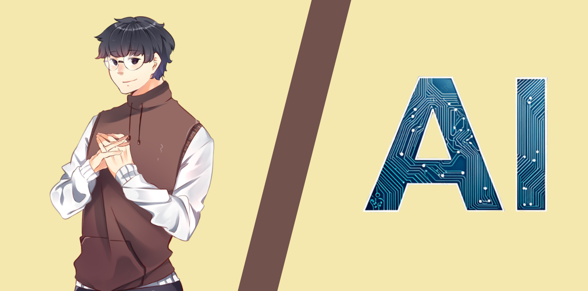
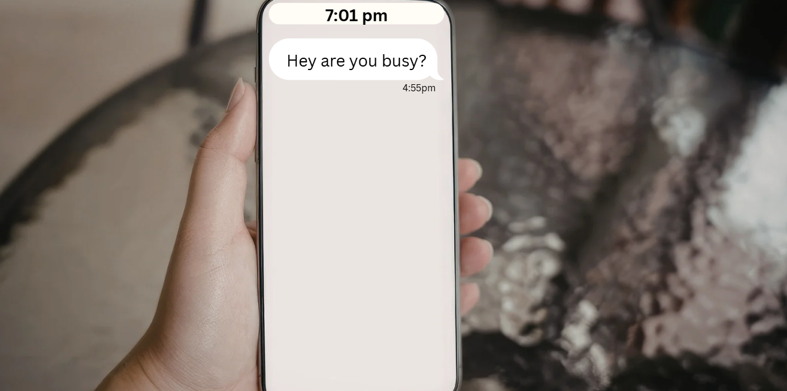
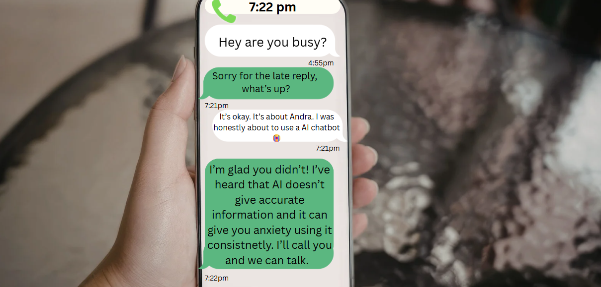
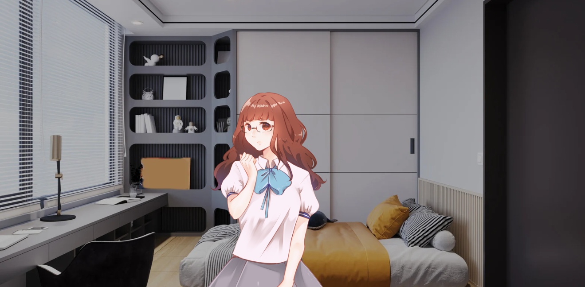
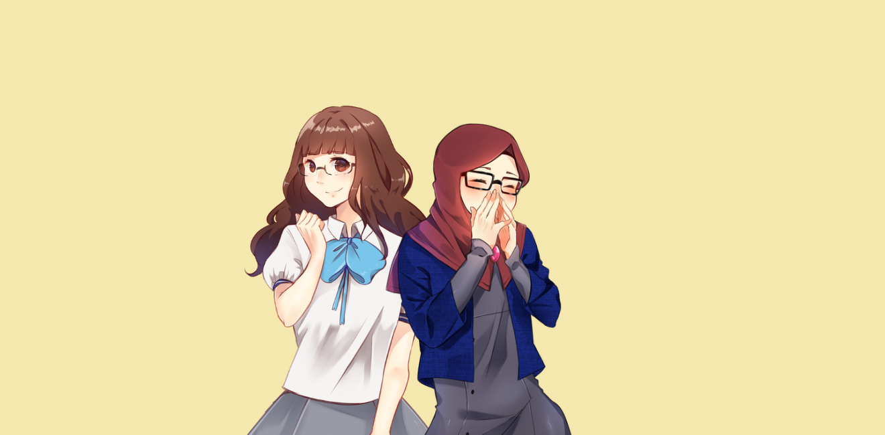
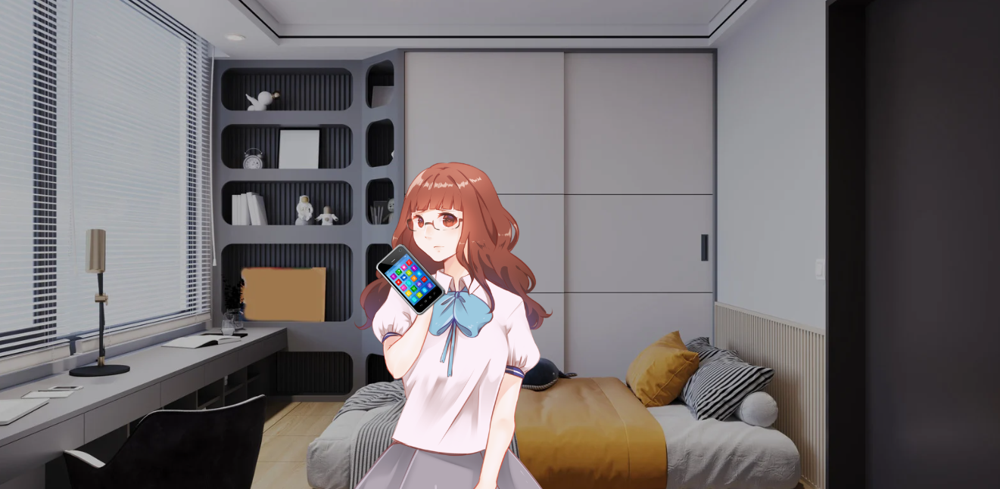
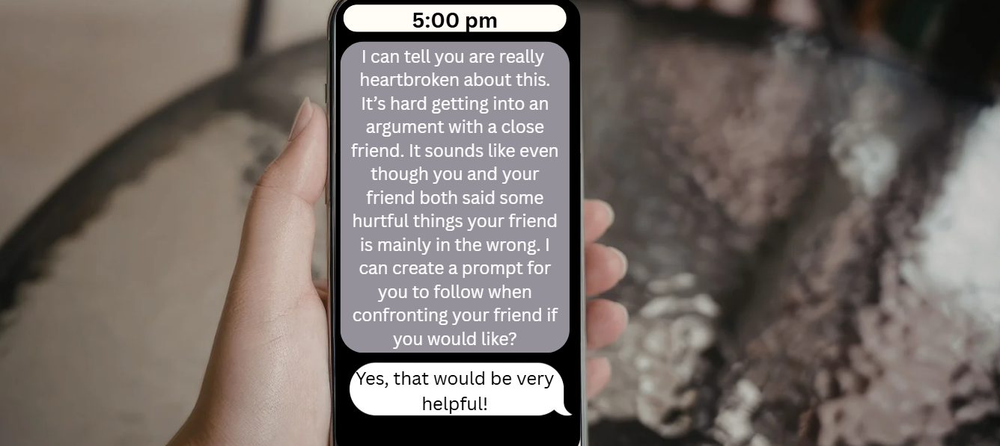
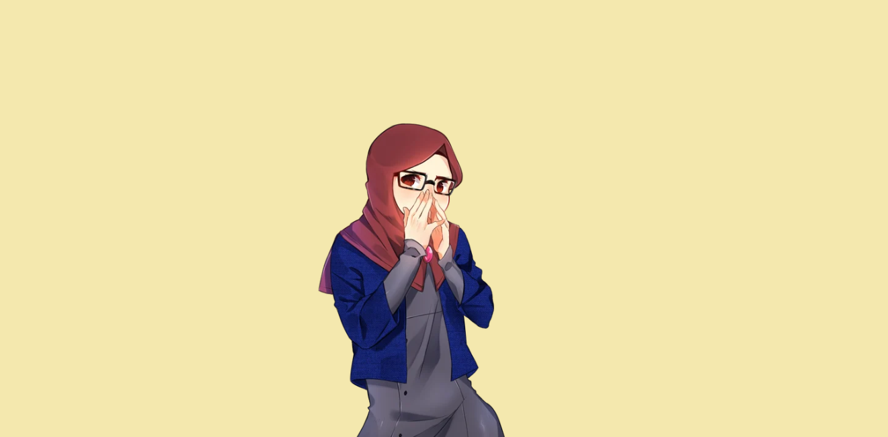
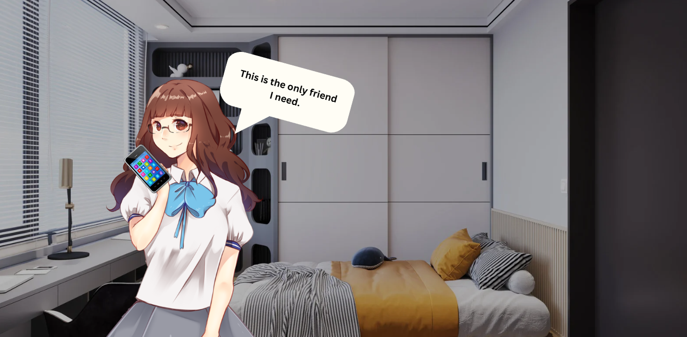
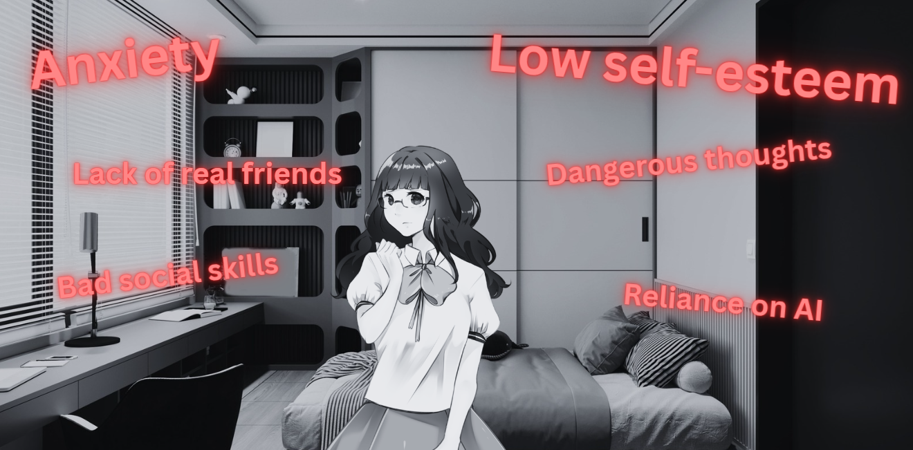

Irreplaceable Companions: How Preference for AI Increases
If you would like to continue press start
You will be playing as Amelia. A college student who recently got into a major argument with her best friend, called Andra over codependency.
You really miss your bestfriend and are in need of advice. You can ask one of your close friends or use this new AI chatbot you've heard about. Who or what will you talk to?

You decide to ask one of your friends for advice, but they are taking a long time to answer.Do you...

You decide to wait for your friend to reply and eventually they get back to you! After talking with your friend, you see that you and your bestfriend said things that shouldn't have been said. You want to confirm before confronting your best friend, so you decide to ask someone else.

You go ask your mom for advice and she gives you a long winded lecture about the importance of friendship and "silly arguments". Now you feel conflicted again. Do you...
After thinking you come to the conclusion that feelings were hurt on both sides and that you should go talk to your bestfriend.

True friends can makeup through any situation, as long as you are genuine and honest with each other. It may have been confusing at times but you were determined to fix your relationship with your friend through the way you knew best, by talking with others.

Reload to play again OR click the button below to view sources used.
Hi
Sources
Bryan, N. (2026, January 29). My AI companions and me: Exploring the world of empathetic bots. https://www.bbc.com/news/articles/c62njv82n0wo
Katersky, A. (2025, November 2). Platform cuts off teens from chats with AI characters. https://research-ebsco-com.proxy2.library.illinois.edu/linkprocessor/plink?id=ad4a7242-6b39-3074-9020-c4a915ec01c6
Sargazi Moghadam, Tayebeh, et al. “Toward an Artificial Intelligence-Based Decision Framework for Developing Adaptive E-Learning Systems to Impact Learners’ Emotions.” Interactive Learning Environments, 23 Mar. 2023, pp. 1–21, https://doi.org/10.1080/10494820.2023.2188398
Ying Wang et al., Y.; Li, S. Tech vs. Tradition: ChatGPT and Mindfulness in Enhancing Older Adults’ Emotional Health. Behav. Sci. 2024, 14, 923.https://doi.org/10.3390/bs14100923
Clare Huntington, “How Consistent Friendlike Conversation with AI Companions Influences Our Attitudes and Perceptions Toward AI: An Exploratory Experiment” Illinois.edu,2026https://research-ebsco-com.proxy2.library.illinois.edu/linkprocessor/plink?id=a645cce8-c5a9-30b9-9db0-9d54e8b5483e. Accessed 3 Apr. 2026.
Ho Jerlyn, “AI Companions and the Lessons of Family Law” Illinois.edu, 2026,https://research-ebsco-com.proxy2.library.illinois.edu/linkprocessor/plink?id=e82062c8-a00e-33fe-9cae-c87b1e56fe32. Accessed 3 Apr. 2026.
Reload to play again
You decide to use an AI chatbot to help you figure out what to say to your bestie.

You tell the AI about your situation and it seems really sympathetic to you. It makes you feel good having something easily accessible and always on your side. Based on the prompt it gives you, you decide to confront your friend using it.

When you confront Andra she gets very mad at you blaming her for the whole situation and she says you don't sound like yourself. It doesn't seem like you and Andra will ever be best friends again.

Despite the warnings you have recieved from friends and family alike you decide you don't need anyone anyway and that the AI chabot is the only one you need.

Unfortunately as time passes you will have several issues due to relying on AI so heavily...

You double check with AI, acknowleding that there are many benefits to using it as a recource if used properly. A lot of the words sound appealing but you keep in mind what your friend said and make your own decisions using both sources.